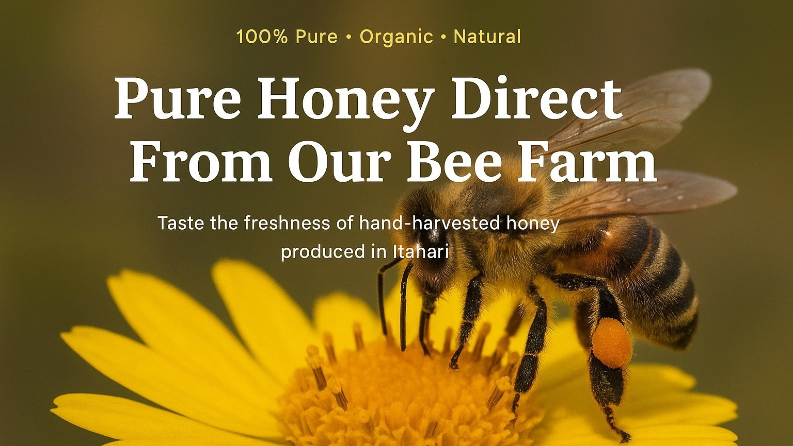

Our Journey & Legacy
About Safal Mauri Palan
Itahari, Sunsari मा विगत १० वर्षभन्दा बढी समयदेखि आधुनिक, दिगो र वैज्ञानिक beekeeping गर्दै आएको अग्रणी मौरी फार्म।

10+ Years
Scientific Apiculture
Safal Mauri Palan मा तपाईँलाई हार्दिक स्वागत छ।
Itahari, Nepal मा अवस्थित Safal Mauri Palan ले विगत १० वर्षभन्दा बढी समयदेखि आधुनिक, दिगो र scientific beekeeping गर्दै आएको छ। हामी Apis mellifera प्रजातिका मौरीहरूलाई आधुनिक तरिकाबाट पालन–पोषण गर्छौं, जसले मौरीहरूको स्वास्थ्य र उत्पादन दुवै उच्च स्तरमा राख्छ।
दशकभन्दा धेरै अनुभवसहित, हामी हाल हरेक वर्ष १०–१५ tons शुद्ध मह उत्पादन गर्दै आएका छौँ। हाम्रो मह विभिन्न प्राकृतिक फूल र बोटबिरुवाबाट संकलित हुने भएकाले प्रत्येक variety मा छुट्टै स्वाद, सुगन्ध र गुण पाइन्छ।
Itahari, Nepal मा अवस्थित Safal Mauri Palan ले विगत १० वर्षभन्दा बढी समयदेखि आधुनिक, दिगो र scientific beekeeping गर्दै आएको छ। हामी Apis mellifera प्रजातिका मौरीहरूलाई आधुनिक तरिकाबाट पालन–पोषण गर्छौं, जसले मौरीहरूको स्वास्थ्य र उत्पादन दुवै उच्च स्तरमा राख्छ।
दशकभन्दा धेरै अनुभवसहित, हामी हाल हरेक वर्ष १०–१५ tons शुद्ध मह उत्पादन गर्दै आएका छौँ। हाम्रो मह विभिन्न प्राकृतिक फूल र बोटबिरुवाबाट संकलित हुने भएकाले प्रत्येक variety मा छुट्टै स्वाद, सुगन्ध र गुण पाइन्छ।
Zero Adulteration
कुनै बाह्य चिनी वा केमिकल मिसावट बिना संकलित शतप्रतिशत प्राकृतिक मह।
Apis mellifera Care
वैज्ञानिक विधिबाट मौरीका गोलाहरूको नियमित स्वास्थ्य परीक्षण र हेरचाह।
10–15 Tons Capacity
वार्षिक १० देखि १५ टन शुद्ध मह उत्पादन गर्न सक्ने अनुभवी क्षमता।
Complete Apiary Support
नयाँ तथा व्यावसायिक मौरीपालकहरूलाई घार, सामग्री र प्राविधिक सल्लाह।
Authentic Farm Glimpse
Live Video: Beekeeping & Honey Harvesting
Safal Mauri Palan, Itahari-4, Sunsari — प्राङ्गारिक मौरीपालन र शुद्ध मह संकलनको प्रत्यक्ष भिडियो झलक।
Experience Pure Itahari Honey Today
चाहे तपाईंलाई भान्छाको लागि शुद्ध प्राकृतिक मह चाहिएको होस् वा नयाँ मौरीपालन व्यवसाय सुरु गर्न मौरीघार र सामग्री चाहिएको होस्, हामीलाई सम्झनुहोस्।